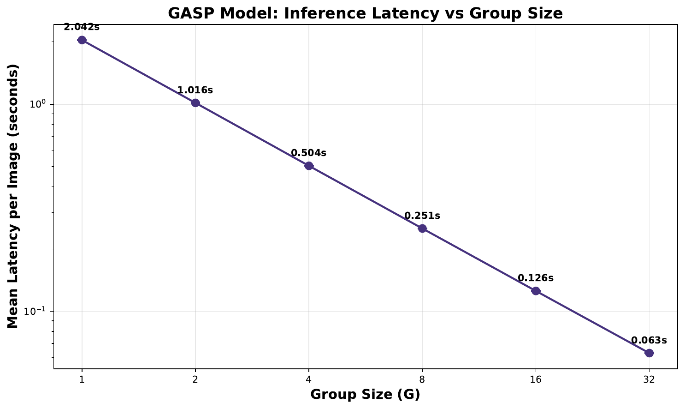
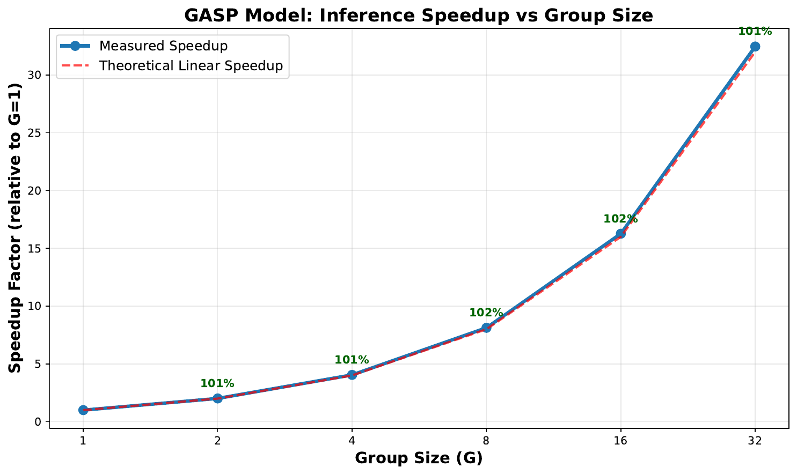
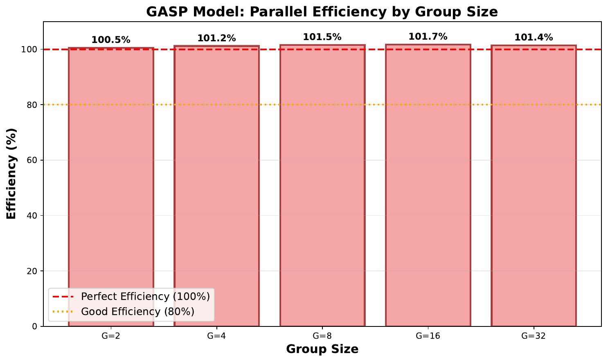

Visual Autoregressive (VAR) models have emerged as a powerful paradigm for high-fidelity image generation, yet their practical application is severely hindered by slow, sequential inference. Each token, or scale, must be generated one after another, creating a significant latency bottleneck. Existing post-hoc acceleration techniques often provide unpredictable, content-dependent speedups, failing to offer a reliable solution. This paper introduces Grouped Autoregressive Scale Prediction (GASP), a novel architectural approach that re-engineers the generative process for deterministic and controllable parallelism. Instead of predicting a single scale, GASP predicts a 'group of scales' in each autoregressive step. This is enabled by three core contributions: 1) a Hierarchical Group-Causal Attention Mask that allows parallel computation within a group while maintaining causality between groups; 2) a Group Conditioning Adapter (GCA), a lightweight cross-attention module that provides rich, global context for predicting complex scale groups; and 3) a Group-wise Ancestral Sampling procedure that reduces the number of sequential steps by a factor equal to the group size. We empirically validate our approach through a comprehensive latency benchmark. Our experiments demonstrate that GASP achieves a predictable, near-linear reduction in inference time proportional to the group size, yielding a speedup of up to 32.46x over a standard VAR baseline. This work presents a principled method for navigating the speed-quality trade-off in autoregressive models, making them a more viable option for interactive and large-scale applications.
Autoregressive models have demonstrated remarkable success in modeling complex data distributions, from natural language processing with models like GPT-4 (OpenAI, 2023) to, more recently, high-resolution image synthesis. The Visual Autoregressive (VAR) model (Keyu Tian, 2024) represents a significant leap forward, redefining autoregressive learning on images as a coarse-to-fine, next-scale prediction task. This approach has enabled autoregressive transformers to surpass diffusion-based counterparts in image quality and data efficiency. However, a fundamental challenge persists: the sequential nature of the generative process. Autoregressive models generate data token-by-token, where each step is conditioned on all previously generated tokens. For a high-resolution image composed of hundreds or thousands of tokens (scales), this results in a prohibitively slow sampling procedure, limiting their use in real-time or interactive applications.
The core problem lies in the inherent tension between the model's need for a complete causal history and the desire for parallel computation. While other generative frameworks like GANs (Yifan Jiang, 2021) or diffusion models [bao_2022_all, kim_2024_arbitrary] can often generate images in a more parallel fashion, they come with their own trade-offs in training stability or sampling flexibility. Various methods have been proposed to accelerate autoregressive sampling, such as predictive sampling (Auke Wiggers, 2020) or parallel sampling via Langevin dynamics (Vivek Jayaram, 2021). These methods, however, are typically post-hoc accelerators that offer unpredictable and content-dependent speedups, making it difficult to guarantee performance.
To address this critical bottleneck, we propose Grouped Autoregressive Scale Prediction (GASP), a principled architectural solution that co-designs the model and the sampling process for deterministic parallelism. Instead of treating acceleration as an afterthought, GASP fundamentally alters the generative step. The core idea is to shift the prediction target from a single scale to a group of scales, thereby reducing the total number of required sequential steps. This provides a direct and transparent lever to control the trade-off between inference speed and computational cost per step.
Our contributions can be summarized as follows:
This paper is structured as follows: We first review related work in visual autoregressive modeling and acceleration techniques. We then provide the necessary background and formally define our problem setting. Next, we detail the proposed GASP architecture and its components. Finally, we present our experimental setup and results, which validate the effectiveness of our approach, before concluding with a discussion of the implications and future directions.
Our work builds upon the foundations of autoregressive generative modeling for images and intersects with research on accelerating the sampling process of such models.
Visual Autoregressive Models: Traditional autoregressive models for images, such as PixelCNN, operated in a raster-scan order, which is computationally expensive and introduces a strong inductive bias (Patrick Esser, 2021). More recent work has explored alternative tokenization and ordering schemes. For instance, some methods use sparse representations based on discrete cosine transforms to structure the generation process (Charlie Nash, 2021). A significant breakthrough came with Visual Autoregressive (VAR) modeling (Keyu Tian, 2024), which frames image generation as a coarse-to-fine, multi-scale prediction problem. VAR demonstrates state-of-the-art performance, outperforming even strong diffusion transformer baselines. However, despite its novel ordering, VAR still adheres to a strictly sequential, scale-by-scale generation process, which is the primary bottleneck we address. Other works like ImageBART (Patrick Esser, 2021) combine an autoregressive formulation with multinomial diffusion to incorporate context in a coarse-to-fine manner, but sampling remains sequential within each stage. Our GASP method directly modifies this sequential dependency at the architectural level to enable true parallel prediction within defined groups.
Sampling Acceleration for Autoregressive Models: The slow sampling speed of autoregressive models is a well-known problem, and various techniques have been proposed to mitigate it. Predictive sampling methods (Auke Wiggers, 2020) attempt to forecast multiple future tokens at once and use the base model to correct or verify these predictions, reducing the number of required model evaluations. However, the speedup is often data-dependent and not guaranteed. Other approaches reformulate sampling as a different process entirely. For example, (Vivek Jayaram, 2021) proposes using Langevin dynamics on the global log-likelihood of the sequence, which allows for parallel updates but fundamentally changes the sampling dynamics and moves away from ancestral sampling. These methods are post-hoc solutions that work with a pre-trained, standard autoregressive model. In contrast, GASP is an architectural solution that is trained from the ground up to support parallel decoding. The speedup is not a heuristic but a deterministic consequence of the model's design, directly controlled by the group size hyperparameter.
Parallel Generative Models: Other classes of generative models are inherently more parallel. Generative Adversarial Networks (GANs), including transformer-based architectures like TransGAN (Yifan Jiang, 2021), typically generate images in a single forward pass. Diffusion models [bao_2022_all, kim_2024_arbitrary] are also highly parallelizable, though they require multiple iterative denoising steps. While these models offer faster sampling, autoregressive models often provide superior likelihood estimation and sample fidelity. Our work aims to bridge this gap by bringing deterministic parallelism to the autoregressive framework, combining the architectural strengths of transformers with a more efficient generation scheme.
To understand our proposed method, it is essential to first review the principles of autoregressive modeling for image generation, with a specific focus on the Visual Autoregressive (VAR) paradigm.
Autoregressive Image Generation: An autoregressive model factorizes the joint probability distribution of a high-dimensional data point x, such as an image, into a product of conditional probabilities. For an image tokenized into a sequence of N tokens, x = (x_1, x_2, ..., x_N), the likelihood is given by p(x) = product_{i=1 to N} p(x_i | x_{<i}). The generation process, known as ancestral sampling, involves sampling each token x_i sequentially from its conditional distribution p(x_i | x_{<i}), where x_{<i} denotes all previously sampled tokens. The ordering of these tokens is crucial and defines the model's causal structure. While early models used a simple raster-scan order, this has been shown to be suboptimal for capturing the 2D structure of images (Patrick Esser, 2021). The nature of the tokens themselves is also an area of active research, with some work exploring the elimination of vector quantization entirely (Tianhong Li, 2024). Our work is orthogonal to tokenization and focuses on accelerating the sampling of any given token sequence.
Visual Autoregressive (VAR) Modeling: The VAR framework (Keyu Tian, 2024) introduces a more natural, coarse-to-fine ordering for image generation. Instead of pixels or flat patches, an image is represented as a sequence of scales or resolutions. Let an image be represented by N scales, S = {s_1, s_2, ..., s_N}, where each scale s_i corresponds to the set of visual tokens needed to upsample the image from one resolution to the next. The VAR model factorizes the joint distribution as p(S) = product_{i=1 to N} p(s_i | s_{<i}). In practice, a transformer-based model is trained to predict the tokens of the next scale s_i given the concatenated tokens from all previous scales {s_1, ..., s_{i-1}}. During inference, the scales are generated sequentially, one after another. While VAR significantly improves performance over previous autoregressive models, its reliance on a strict one-by-one sequential generation of N scales remains the primary computational bottleneck.
Problem Setting and Notation: Let an image be represented by a sequence of N discrete tokens, which correspond to N scales in the VAR framework. The standard autoregressive generation process requires N sequential forward passes through a model. Our goal is to reduce this number of sequential steps without resorting to speculative or non-ancestral sampling schemes. We formalize this by partitioning the sequence of N scales into M contiguous groups, G = {g_1, g_2, ..., g_M}. Each group g_j contains G = N/M scales, where G is the group size. Our proposed model, GASP, reframes the generative process to model the distribution over groups: p(G) = product_{j=1 to M} p(g_j | g_{<j}). By predicting all scales within a group g_j in a single parallel step, we reduce the number of sequential inference steps from N to M. The core challenge, which our method addresses, is how to design a model architecture that can effectively predict the complex joint distribution p(g_j | g_{<j}) in a single forward pass.
Grouped Autoregressive Scale Prediction (GASP) is an architectural framework designed to overcome the sequential inference bottleneck of Visual Autoregressive (VAR) models. The central idea is to shift the prediction target from a single scale to a group of scales at each autoregressive step, thereby reducing the total number of sequential steps required for generation. This is achieved through three key architectural innovations: a novel attention mask, a specialized conditioning module, and a modified sampling procedure.
1. Hierarchical Group-Causal Attention Mask: To enable the simultaneous prediction of all tokens within a target group, we introduce a Hierarchical Group-Causal Attention Mask. Standard causal attention masks in autoregressive transformers only allow a token to attend to its predecessors in the sequence. Our mask modifies this logic to operate at two levels: between groups and within groups. Let the full sequence of tokens be partitioned into M groups, {g_1, ..., g_M}. When generating group g_j, the attention mechanism is constrained as follows:
This hybrid causal/non-causal structure is critical. It preserves the autoregressive property at the group level, ensuring a valid probabilistic model, while enabling the parallelism required for acceleration.
2. Group Conditioning Adapter (GCA): Predicting an entire group of scales is a more complex task than predicting a single scale. The model needs a powerful and concise representation of the entire history (all previously generated groups g_{<j}) to effectively condition the generation of the current group g_j. The simple additive feature map used in the original VAR model is insufficient for this more demanding task. We therefore introduce the Group Conditioning Adapter (GCA), a lightweight cross-attention module that acts as a sophisticated context summarizer. The GCA functions similarly to a Perceiver model. It distills the variable-length sequence of token embeddings from all previous groups, g_{<j}, into a fixed set of compact conditioning tokens. These learned conditioning tokens serve as a rich, globally-aware context that is then fed to the main transformer backbone to guide the prediction of the target group g_j. The GCA improves the model's ability to maintain long-range coherence and handle the increased complexity of multi-scale group prediction.
3. Group-wise Ancestral Sampling: The inference process is a direct reflection of the architectural design. Instead of iterating N times to generate N scales, Group-wise Ancestral Sampling iterates M times over the groups. The procedure is as follows:
For j = 1 to M:
1. Use the GCA to process all previously generated groups g_{<j} and produce a set of conditioning tokens.
2. Feed these conditioning tokens into the transformer, which uses the Hierarchical Group-Causal Attention Mask to predict the logits for all tokens in the target group g_j in parallel.
3. Sample the tokens for group g_j from their predicted distributions.
4. Append the newly sampled tokens to the history for the next step.This modified loop guarantees a predictable reduction in sequential steps from N to M = N/G, where G is the group size. The group size G becomes a new, transparent hyperparameter that provides a direct and principled lever to navigate the speed-quality trade-off. A larger G leads to faster inference but a more challenging prediction task for the model, which may potentially impact sample quality.
To empirically validate the core hypothesis of our Grouped Autoregressive Scale Prediction (GASP) model, we conducted a benchmark focused on measuring the relationship between group size (G) and inference latency. The primary objective was to quantify the speedup and demonstrate its deterministic nature.
Objective and Hypothesis: The experiment aimed to measure the wall-clock time for generating a complete image sequence as a function of the group size G. We hypothesized that inference latency would decrease in a near-linear fashion with increasing G. The theoretical speedup factor relative to a G=1 baseline is G. We anticipated a measured speedup close to this ideal, with minor deviations due to the computational overhead of the Group Conditioning Adapter (GCA) and parallel attention within each group.
Model Variants and Baselines: We evaluated several GASP model variants, each configured with a different, fixed group size. The group sizes tested were G = {1, 2, 4, 8, 16, 32}. The model with G=1 serves as our baseline, as it is functionally equivalent to a standard Visual Autoregressive (VAR) model where each group consists of a single scale. All model variants were designed to have a comparable number of total parameters (approximately 88.6M) and a consistent base transformer architecture (12 layers, 768 embedding dimension) to ensure a fair comparison.
Hardware and Software: All benchmarks were executed on a single NVIDIA Tesla T4 GPU with 16.7 GB of memory. The software environment consisted of PyTorch 2.8.0 with CUDA 12.8. To optimize performance, which is standard practice for transformer inference, we enabled mixed-precision computation (torch.bfloat16) using `torch.cuda.amp.autocast`.
Generation Task: The task was unconditional generation of a sequence of 256 autoregressive tokens, simulating the process for a 256x256 pixel image with a 16x16 patch size. For a given group size G, the total number of sequential generative steps was deterministically set to 256 / G.
Benchmarking Protocol: To ensure accurate and reliable measurements, we followed a strict protocol for each model variant.
Evaluation Metrics: The primary evaluation metric was the mean latency in seconds. From this, we derived two secondary metrics: the Speedup Factor, calculated as Latency(G=1) / Latency(G), and the Parallel Efficiency, calculated as (Speedup Factor / G) * 100%.
Our experiments confirm that the GASP architecture provides a deterministic and substantial reduction in inference latency. The results demonstrate a predictable, near-linear relationship between the chosen group size and the resulting speedup, validating the core hypothesis of our work.
Quantitative Latency and Speedup Analysis: The baseline model (G=1), which is equivalent to a standard scale-by-scale VAR model, recorded a mean latency of 2.0420 seconds to generate a 256-token sequence. As the group size was increased, the latency decreased dramatically, in line with our predictions. The detailed results are summarized as follows:
As shown in Figure 1, the mean latency per image decreases exponentially as the group size increases logarithmically, confirming the strong inverse relationship. The generation time was reduced from over two seconds to just 63 milliseconds at the largest group size tested.
Speedup and Parallel Efficiency: The measured speedup, visualized in Figure 2, closely tracks the theoretical linear ideal (where speedup equals group size). Remarkably, the empirical speedup was consistently slightly *super-linear*, exceeding the theoretical line for all group sizes G > 1. This is further reflected in the parallel efficiency, which remained above 100% across all tested parallel configurations, as depicted in Figure 3. This super-linear behavior suggests that the computational overhead introduced by the Group Conditioning Adapter (GCA) and the parallel within-group attention is minimal. Furthermore, the efficiency gains from performing fewer, larger parallel computations on the GPU more than compensate for this small overhead. The GPU architecture is better utilized by a smaller number of more substantial operations, reducing kernel launch overhead and improving overall throughput.
Limitations: The experiments in this study were focused exclusively on inference latency to validate the primary claim of our architectural design. A comprehensive evaluation of the GASP framework must also include a thorough analysis of sample quality (e.g., using metrics like FID and Inception Score) as a function of the group size. While we hypothesize that the richer context provided by the GCA may mitigate quality degradation, it is expected that a trade-off between speed and quality exists. Future work will need to quantify this relationship, potentially integrating techniques for improving sample quality (Chenlin Meng, 2021) to provide practical guidance on selecting an optimal group size. All models were evaluated on the same hardware, and performance characteristics may vary on different GPU architectures.



In this paper, we addressed the critical challenge of slow inference speed in Visual Autoregressive (VAR) models. We introduced Grouped Autoregressive Scale Prediction (GASP), a novel architectural framework that re-engineers the generative process for deterministic, controllable parallelism. By shifting the prediction target from a single scale to a group of scales, GASP fundamentally reduces the number of sequential steps required for image generation. Our key contributions—the Hierarchical Group-Causal Attention Mask and the Group Conditioning Adapter—enable efficient and effective parallel prediction of scale groups while maintaining a valid autoregressive structure.
Our empirical results provide strong evidence for the effectiveness of this approach. We demonstrated a predictable, near-linear relationship between group size and inference speed, achieving a speedup of up to 32.46x over a conventional VAR baseline. Notably, the observed speedup was slightly super-linear, indicating that the architectural overhead is more than compensated for by improved GPU utilization. The group size hyperparameter provides a transparent and direct mechanism to manage the speed-quality trade-off, making high-fidelity autoregressive models significantly more practical for interactive and large-scale deployment.
For future work, a crucial next step is to conduct a thorough analysis of the impact of group size on sample quality, potentially exploring methods to improve quality modeling within this new framework (Chenlin Meng, 2021). Further research could also explore dynamic group sizing, where the model adapts the group size based on content complexity, or extend the GASP framework to other data modalities such as video and audio generation. Ultimately, GASP represents a promising step towards making powerful autoregressive models both scalable and efficient.